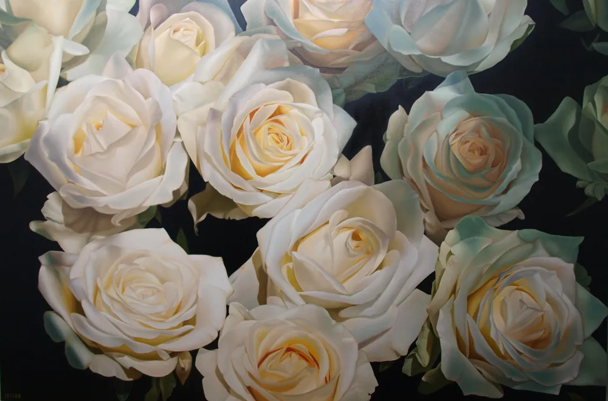

흰 장미-1
- 작품명
- 흰 장미-1
- 연도
- 2011
- 매체
- 유화 물감
- 상태
- 소장됨
- 소장
- 철강업 소장가
이미지 설명(화면에 보이는 대로 적은 것이며 작가의 설명이 아님)
화면은 여러 송이의 유백색 장미로 이루어져 있고, 꽃잎이 겹겹이 말려 펼쳐지며 일부 꽃잎 가장자리에는 청록빛이 돕니다. 배경은 짙은 검정이며 왼쪽 아래에 서명이 있습니다.

화면은 여러 송이의 유백색 장미로 이루어져 있고, 꽃잎이 겹겹이 말려 펼쳐지며 일부 꽃잎 가장자리에는 청록빛이 돕니다. 배경은 짙은 검정이며 왼쪽 아래에 서명이 있습니다.